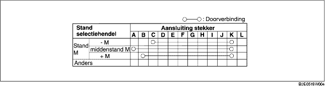

1. Verwijder de accukap. (Zie VERWIJDEREN/PLAATSEN ACCU [ZJ, Z6].) (Zie VERWIJDEREN/PLAATSEN ACCU [LF].)
2. Neem de minkabel van de accu los.
3. Verwijder de middenconsole. (Zie VERWIJDEREN/PLAATSEN MIDDENCONSOLE.)
4. Neem de stekker van de selectiehendel los.
5. Controleer of de doorverbinding is zoals in de tabel is aangegeven.
